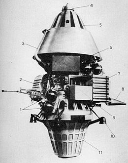
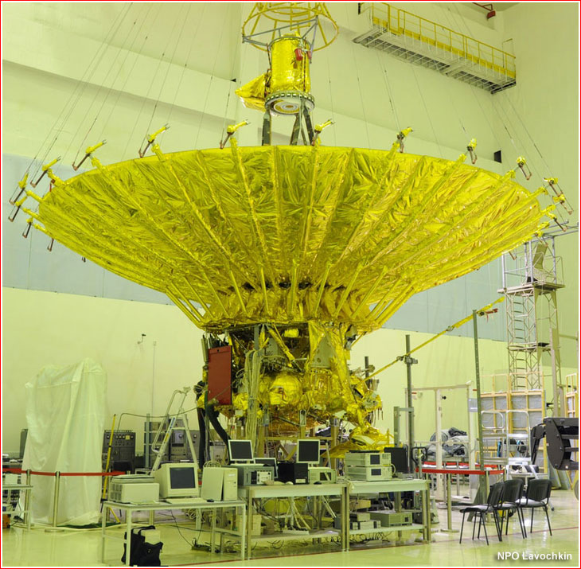

Trending Missions
Luna 14

Luna 14 (E-6LS series) was an unmanned space mission of the Luna program run by the Soviet Union. It was also called Lunik 14. The spacecraft is believed to have been similar to Luna 12 and the instrumentation was similar to that carried by Luna 10. It provided data for studies of the interaction of the earth and lunar masses, the lunar gravitational field, the propagation and stability of radio communications to the spacecraft at different orbital positions, solar charged particles and cosmic rays, and the motion of the Moon. This flight was the final flight of the second generation of the Luna series. Luna 14 successfully entered lunar orbit at 19:25 UT on 10 April 1968. Initial orbital parameters were 160 × 870 kilometers at 42° inclination. The primary goal of the flight was to test communications systems in support of the N1-L3 piloted lunar landing project. Ground tracking of the spacecraft's orbit also allowed controllers to accurately map lunar gravitational anomalies in order to predict trajectories of future lunar missions such as those of the LOK and LK lunar landing vehicles. Luna 14 also carried scientific instruments to study cosmic rays and charged particles from the Sun, although few details have been revealed.
Mars 2M No.521

Mars 2M No.521,[1] also known as Mars M-69 No.521 and sometimes identified by NASA as Mars 1969A, was a Soviet spacecraft which was lost in a launch failure in 1969.[2] It consisted of an orbiter. The spacecraft was intended to image the surface of Mars using three cameras, with images being encoded for transmission back to Earth as television signals. It also carried a radiometer, a series of spectrometers, and an instrument to detect water vapour in the atmosphere of Mars. It was one of two Mars 2M spacecraft, along with Mars 2M No.522, which was launched in 1969 as part of the Mars programme. Neither launch was successful.[3] The Mars 2M probes were originally intended to consist of both an orbiter and a lander. Time constraints did not permit the development of a soft lander, so engineers decided to simply use a hard lander that would crash into the Martian surface but gather data during its descent. At first, a modified Luna E-8 bus was to be used for the spacecraft, however it had a number of limitations that made it unsuitable for the long journey to Mars. Halfway through the project, Lavochkin Bureau design chief Georgi Babakin decided to simply discard the Luna E-8 derived probe and design a completely new one from scratch. However, the 2M probes ended significantly heavier than intended and engineers also ran out of time to conduct drop tests of the lander, so that part was abandoned which left only the orbiter. If successful, this would still be a major propaganda success for the Soviets as NASA was nearly three years away from attempting a Mars orbiter. As 1968 drew to a close, the project was lagging behind schedule and the US was also making significant headway in the space race with Mariner 6 and 7 scheduled to launch to Mars early in the next year and Apollo 8 taking astronauts into lunar orbit. The Kremlin wanted the Mars probes readied as soon as possible and the second of the two probes was completed in the middle of January. Despite doubts that the probes were ready to fly, they were delivered to Baikonour.
Spektr-R

Spektr-R[6] (or RadioAstron) is a Russian scientific satellite with a 10 m (33 ft) radio telescope on board. It was launched on 18 July 2011,[7] by Zenit-3F launcher, from Baikonur Cosmodrome to perform research on the structure and dynamics of radio sources within and beyond our galaxy. Together with some of the largest ground-based radio telescopes, this telescope forms interferometric baselines extending up to 350,000 km (220,000 mi). The Spektr-R project is funded by the Astro Space Center of Russia, and was launched into Earth orbit on 18 July 2011,[3] with a perigee of 10,000 km (6,200 mi) and an apogee of 390,000 km (240,000 mi), about 700 times the orbital height of the Hubble Space Telescope at its highest point and 20 times at its lowest.[8][9] In comparison, the average distance from Earth to the Moon is 384,400 km (238,900 mi).[10] The main scientific goal of the mission is the study of astronomical objects with an angular resolution up to a few millionths of an arcsecond. This is accomplished by using the satellite in conjunction with ground-based observatories and interferometry techniques.[3] Another purpose of the project was to develop an understanding of fundamental issues of astrophysics and cosmology. This included star formations, the structure of galaxies, interstellar space, black holes and dark matter. Spektr-R is one of the instruments in the RadioAstron program, an international network of observatories led by the Astro Space Center of the Lebedev Physical Institute.[8] The telescope is intended for radio-astrophysical observations of extragalactic objects with ultra-high resolution, as well as researching of characteristics of near-Earth and interplanetary plasma. The very high angular resolving power will be achieved when used in conjunction with a ground-based system of radio-telescopes and interferometrical methods, operating at wavelengths of 1.35–6.0, 18.0 and 92.0 cm.[11] Once in space, the flower-like main dish was to open its 27 'petals' within 30 minutes.[12] There is a science payload of opportunity on board, PLASMA-F, which consists of four instruments to observe solar wind and the outer magnetosphere. These instruments are the energetic particle spectrometer MEP-2, the magnetometer MMFF, the solar wind monitor BMSW, and the data collection and processing unit SSNI-2.[13] At launch the mass of the spacecraft was 3,660 kg (8,070 lb). It was launched from the Baikonur Cosmodrome on 18 July 2011 at 02:31 UTC by a Zenit-3F launch vehicle, which is composed of a Zenit-2M with a Fregat-SB upper stage